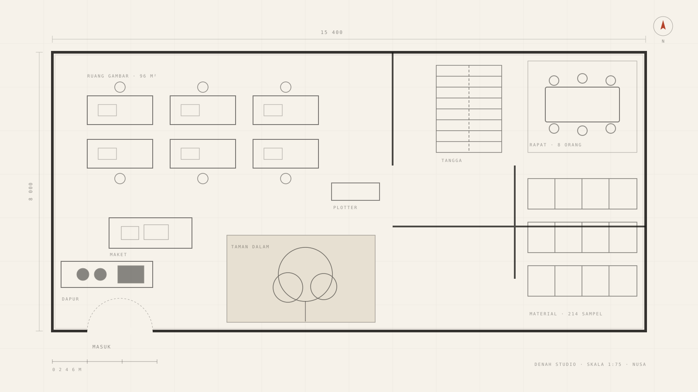

Ruang sebelum bentuk
Kami menguji urutan ruang dengan potongan dan model karton sebelum memilih satu material pun. Bentuk adalah akibat, bukan tujuan.
Studio01 — Tentang kami
Kami tidak mencoba menjadi biro besar. Sebelas orang cukup untuk menjaga setiap gambar diperiksa oleh mata yang sama sejak awal sampai serah terima.
Bangunan yang baik tidak lahir dari selera, tetapi dari pengamatan yang panjang terhadap tempat, cuaca, dan orang yang akan memakainya.
NUSA dimulai pada 2014 di lantai dua sebuah ruko di Cikini. Tiga orang, satu plotter pinjaman, dan proyek pertama berupa renovasi warung kopi 24 meter persegi. Pemiliknya ingin tempat duduk yang tidak membuat orang buru-buru pulang. Kami menggambar potongan melintangnya sebelas kali.
Metode itu tidak berubah. Setiap proyek dimulai dengan potongan — bukan tampak, bukan render. Potongan memaksa kami menjawab pertanyaan yang tidak bisa disembunyikan oleh tekstur: di mana kepala orang berada, dari mana cahaya datang, ke mana air pergi.
Hari ini kami mengerjakan rumah, ruang publik, dan tempat kerja di enam kota. Kami tetap menerima proyek kecil. Yang kami tolak adalah proyek yang tidak memberi kami waktu untuk berpikir.

02Prinsip
Kami menguji urutan ruang dengan potongan dan model karton sebelum memilih satu material pun. Bentuk adalah akibat, bukan tujuan.
Hujan, panas, dan kelembapan bukan gangguan. Semua keputusan — overstek, ketinggian langit-langit, warna — dihitung terhadap iklim tropis.
Batu andesit, kayu jati tua, bata dari Cikarang. Kami memilih material yang bisa diperbaiki tukang lokal sepuluh tahun dari sekarang.
Kalau kontraktor harus menebak, gambar kami gagal. Setiap detail punya skala, sambungan, dan urutan pemasangan yang tertulis.
03Tim
Sebelas orang di studio. Empat di antaranya memimpin proyek dari percakapan pertama sampai kunjungan setahun setelah serah terima.
Pendiri · Arsitek
Sejak 2014 · Jakarta
Partner · Interior
Sejak 2016 · Bandung
Arsitek senior
Sejak 2018 · Semarang
Riset material
Sejak 2021 · Yogyakarta
04Perjalanan
Lantai dua ruko Cikini. Proyek pertama: warung kopi 24 m² yang masih beroperasi sampai hari ini.
Rumah panggung di Ubud membawa kami belajar kayu ulin dan siklus air setempat.
Studio Sendiri: ruko 1950-an yang kami kosongkan, bukan penuhi. Meja gambar tetap di dekat jendela.
Rak contoh bata, beton, dan kayu lokal. Setiap material diuji delapan belas bulan sebelum dipakai.
Adaptasi ulang gedung kantor 1970-an menjadi struktur kayu enam lantai di Bandung.
Jakarta, Bandung, Semarang, Yogyakarta, Ubud, dan Makassar. Masih menolak lebih dari yang bisa kami kerjakan.
05Penghargaan
Kami mengirim karya ketika proyeknya sudah selesai dan penghuninya sudah menempati. Tidak pernah sebaliknya.
06Karier
Arsitek dengan 3–5 tahun pengalaman, kuat di gambar kerja, dan bersedia belajar membuat maket dengan tangan. Kantor lima hari, bukan enam.
Kirim portofolio PDF di bawah 15 MB ke kerja@nusa.studio dengan subjek “Arsitek — Nama Anda”.
Kami membalas setiap lamaran, termasuk yang belum cocok.